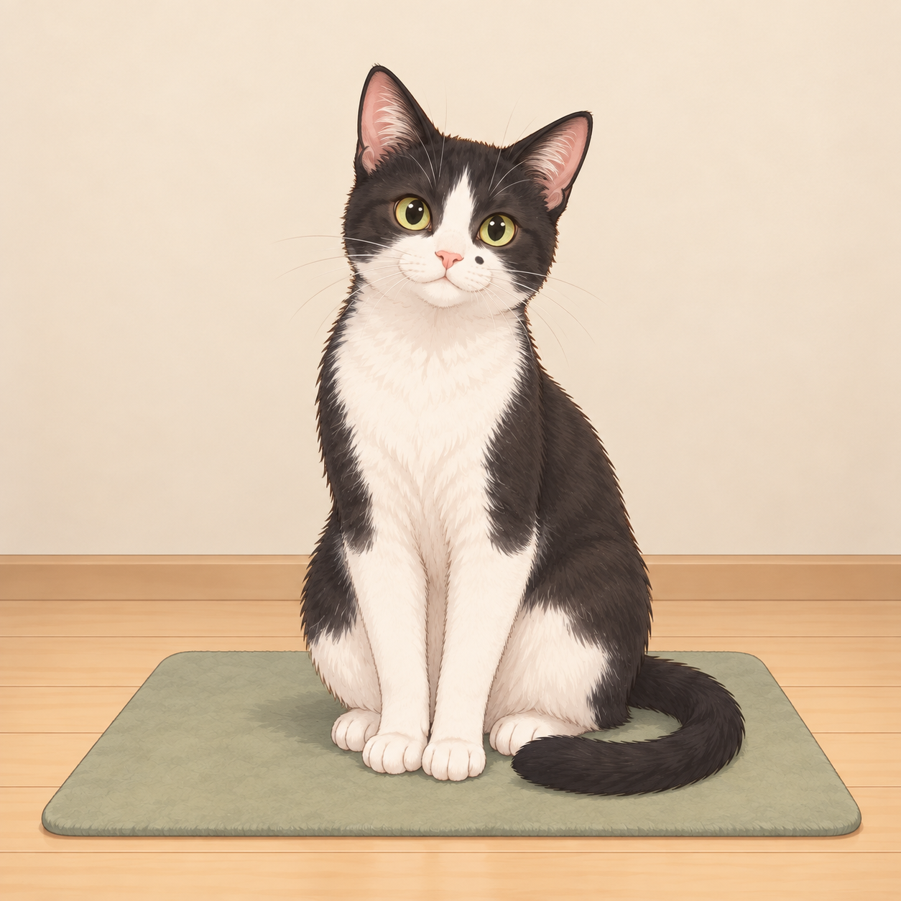
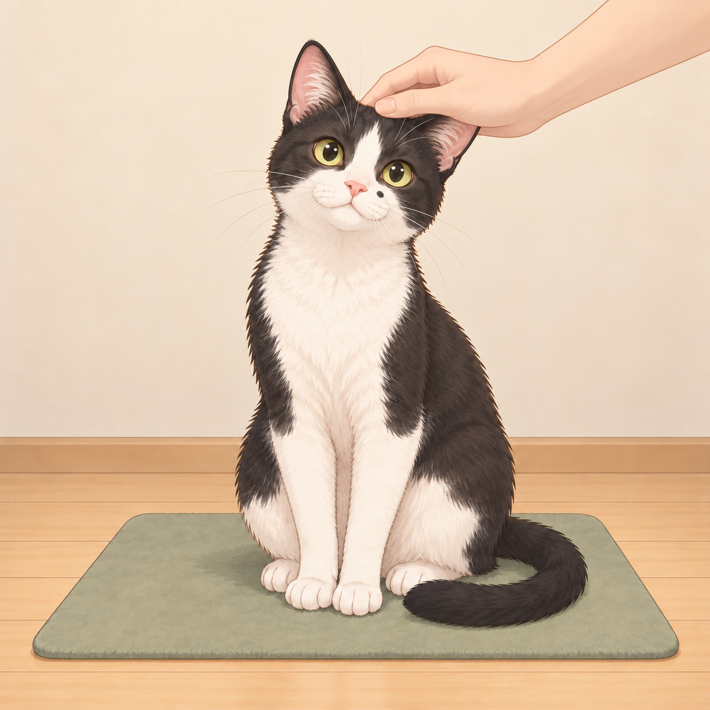
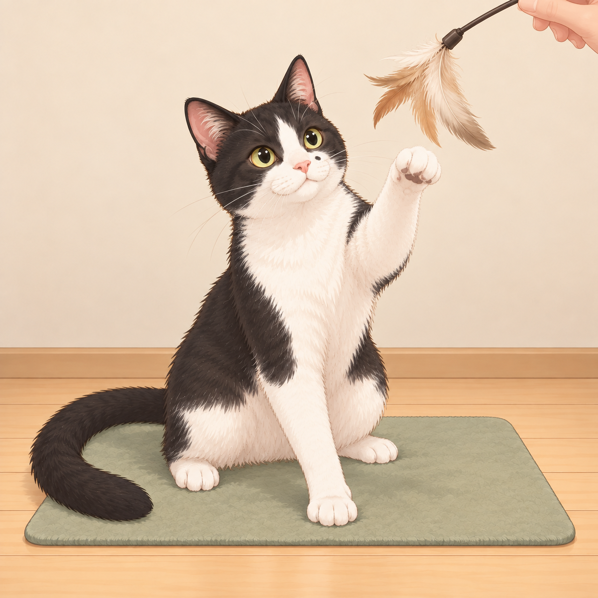
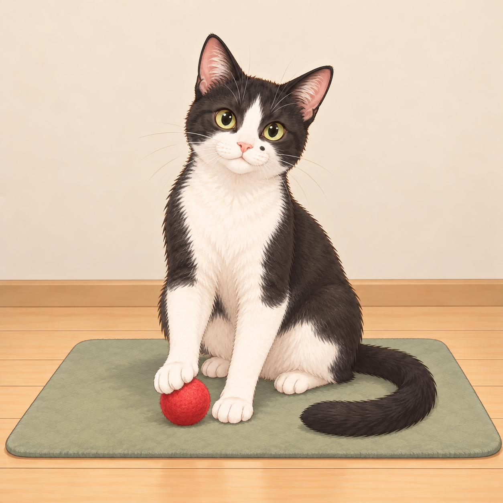
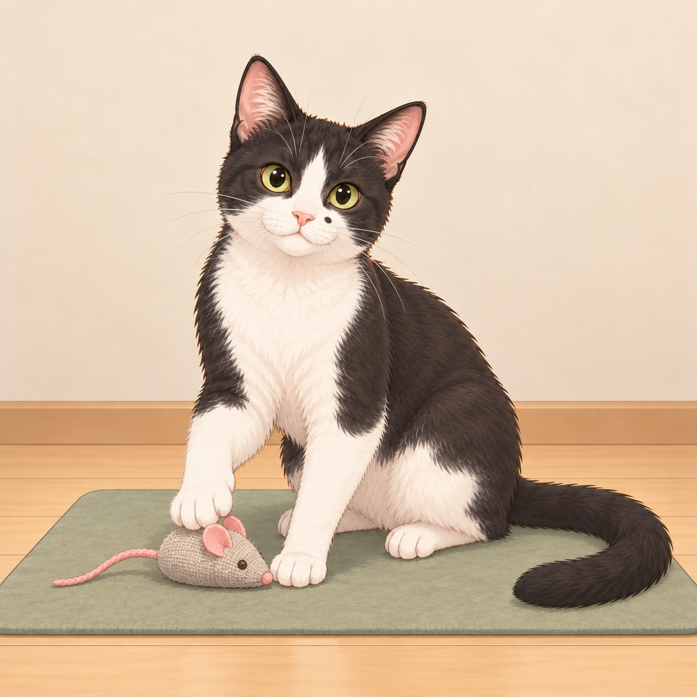
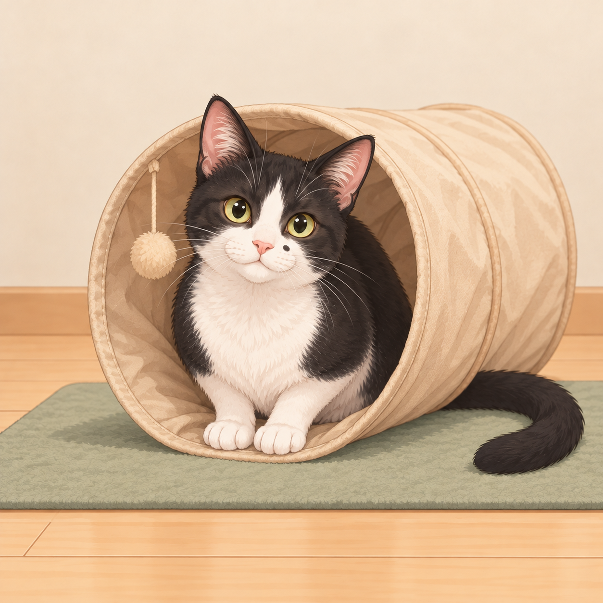
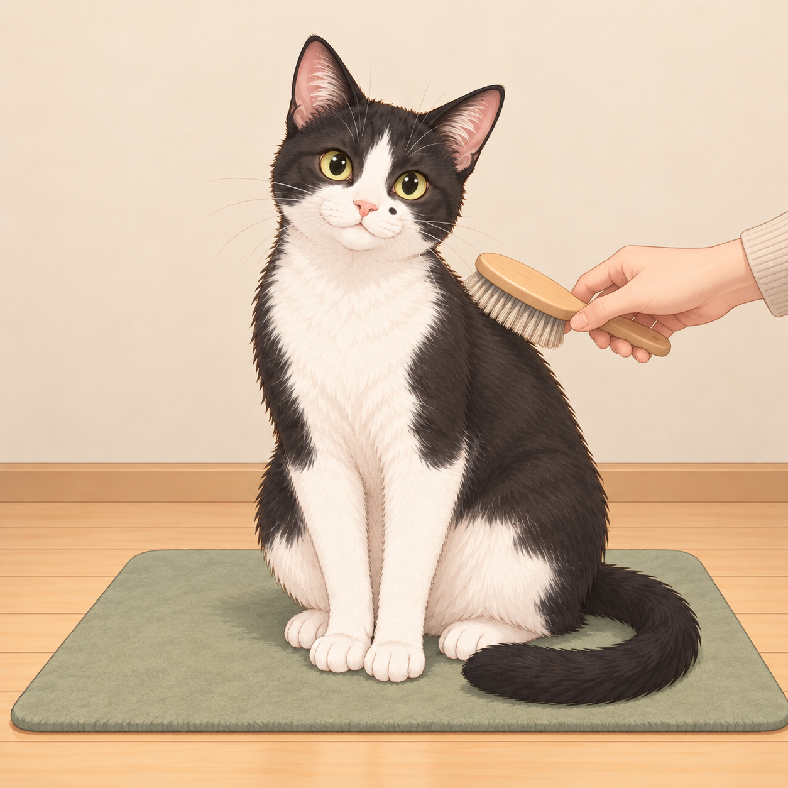
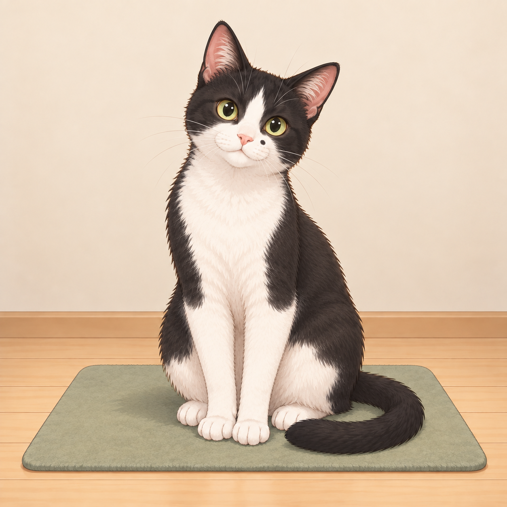
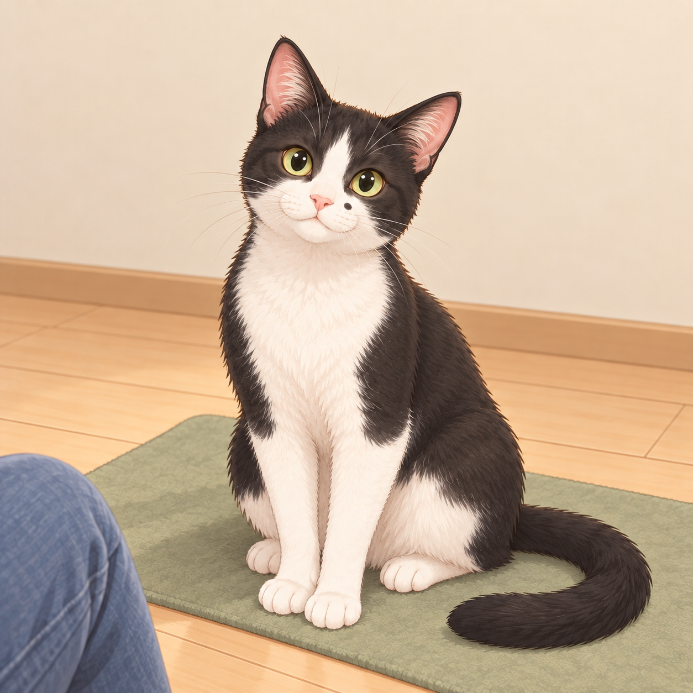

2026-10-17 制作・記録のみ／未登録。左：準備候補、右：実行候補。


既存baseの手は頭の毛に接している。開眼した通常反応なので再利用。旧pet画像の閉眼・甘えた反応へ置換しない。
準備候補は道具・手をまだ出していない中立の基準画像。専用の道具あり未接触準備画像は今回制作しない。現在のbase登録は変更しない。

前足を上げ羽根へ働きかける既存の通常遊びを再利用。静止画のため連続した動きは断定しない。
準備候補は道具・手をまだ出していない中立の基準画像。専用の道具あり未接触準備画像は今回制作しない。現在のbase登録は変更しない。

既存baseで前足が赤い球の上に接しており、すでに通常遊びを表す。再利用。
準備候補は道具・手をまだ出していない中立の基準画像。専用の道具あり未接触準備画像は今回制作しない。現在のbase登録は変更しない。

既存baseで前足が鼠の背に乗っている。通常遊びとして再利用。
準備候補は道具・手をまだ出していない中立の基準画像。専用の道具あり未接触準備画像は今回制作しない。現在のbase登録は変更しない。

既存baseで胴体が筒の内側、前足が入口に出ている。トンネルへ入って遊ぶ静止場面として再利用。速度や通過方向は断定しない。
準備候補は道具・手をまだ出していない中立の基準画像。専用の道具あり未接触準備画像は今回制作しない。現在のbase登録は変更しない。 後半身・後足はトンネルで遮蔽されるため全四肢の輪郭は確認できない。入口内で座る遊びを表し、走り抜ける専用画ではない。

既存baseでブラシ毛先と肩の毛の境界が接している。通常のブラッシングとして再利用。
準備候補は道具・手をまだ出していない中立の基準画像。専用の道具あり未接触準備画像は今回制作しない。現在のbase登録は変更しない。

既存baseの開いた目・耳・軽い顔の向きで話者へ注意を向ける通常場面として再利用。接触は加えない。
準備候補は道具・手をまだ出していない中立の基準画像。専用の道具あり未接触準備画像は今回制作しない。現在のbase登録は変更しない。 基準との姿勢差は控えめ。発話は静止画で見えないため後日の行動文で補う。大きな耳・視線差を必須にする場合は別途差分を検討。

既存baseの画面端に青いズボンの膝があり、接触せず穏やかに座る。そばで見守る実行として再利用。
準備候補は道具・手をまだ出していない中立の基準画像。専用の道具あり未接触準備画像は今回制作しない。現在のbase登録は変更しない。